Посетители
Посетители Эрмитажа используют многообразие вариантов позирования, чтобы показать себя в пространстве музея
Наиболее популярный сюжет – это намеренное позирование посетителя "на камеру". Эти фотографии наследуют и воспроизводят визуальный канон пленочной фотографии - фотографии туриста, сделанной на фоне городской достопримечательности.
Позировать могут стоя прямо и смотря в камеру, либо раскинув руки или подняв руку вверх, размещая себя в пространстве музея.
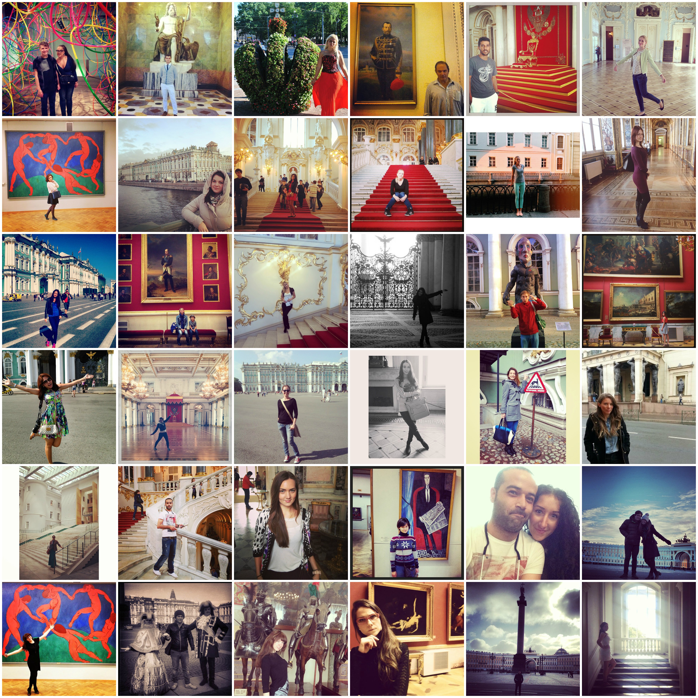

В ряде фотографий мы видим акцент не на сюжете как таковом, а на эстетике нахождения человека в музее: расположении людей в залах, сходстве изображенного на картине и стоящего рядом человека, цветовых сочетаниях между одеждой и элементами интерьера.
На первый вгляд кажется, что фотографии, где люди нарочито не смотрят в камеру, отличаются от привычного позирования. Посетители заменяют его на задумчивый взгляд в сторону или увлеченное рассматривание экспоната. Чтобы уйти от традиционного позирования, посетители Эрмитажа копировали проект "Follow Me", где смотрящему предлагают пройтись по наиболее известным залам и галереям и погрузиться в пространство Эрмитажа.
Эти сюжеты можно отнести к вариации туристического канона, следование которому авторы Instagram-снимков, вероятно, считают отсутствием вкуса.

Туристический канон фотографирования постепенно меняется, и платформа Instagram дополнила репертуар позирования новым жанром - селфи. Посетители Эрмитажа проявляют особенную изобретательность и делают селфи в отражениях зеркал, потолке и картинах музея.

 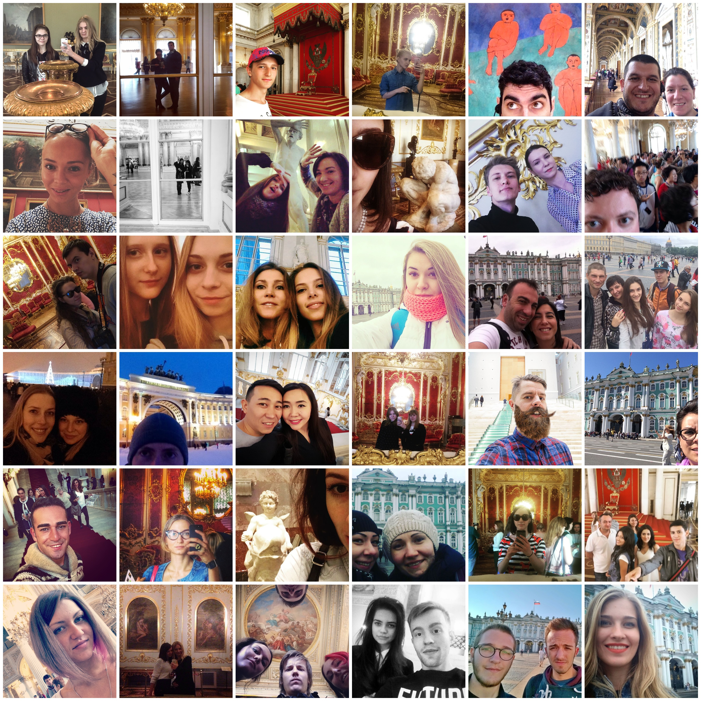
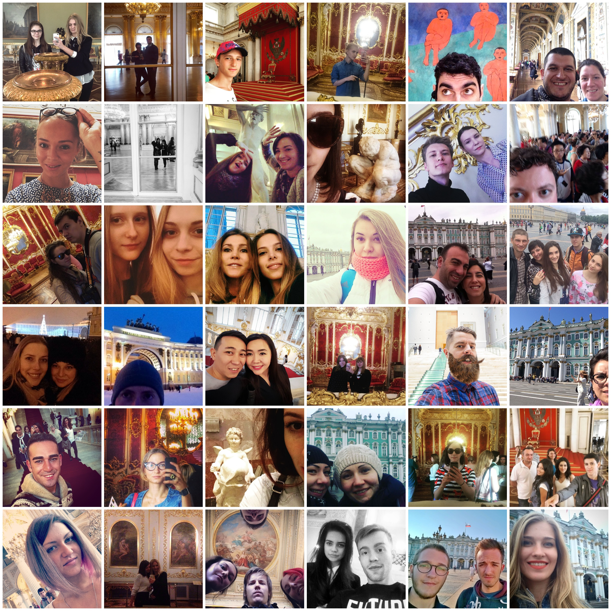
 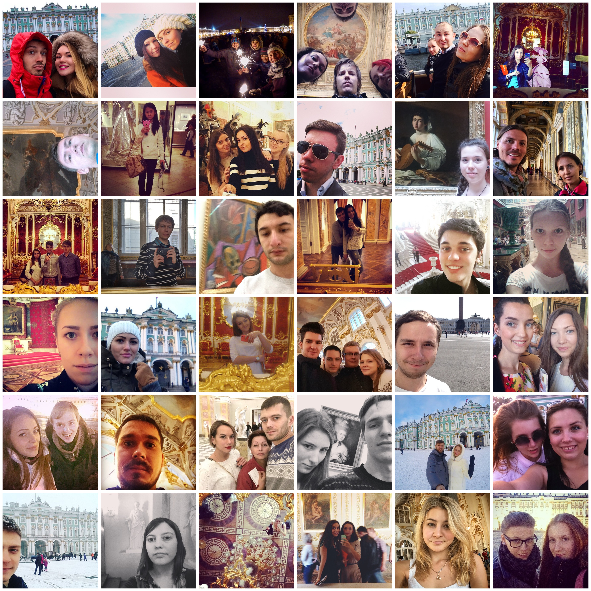
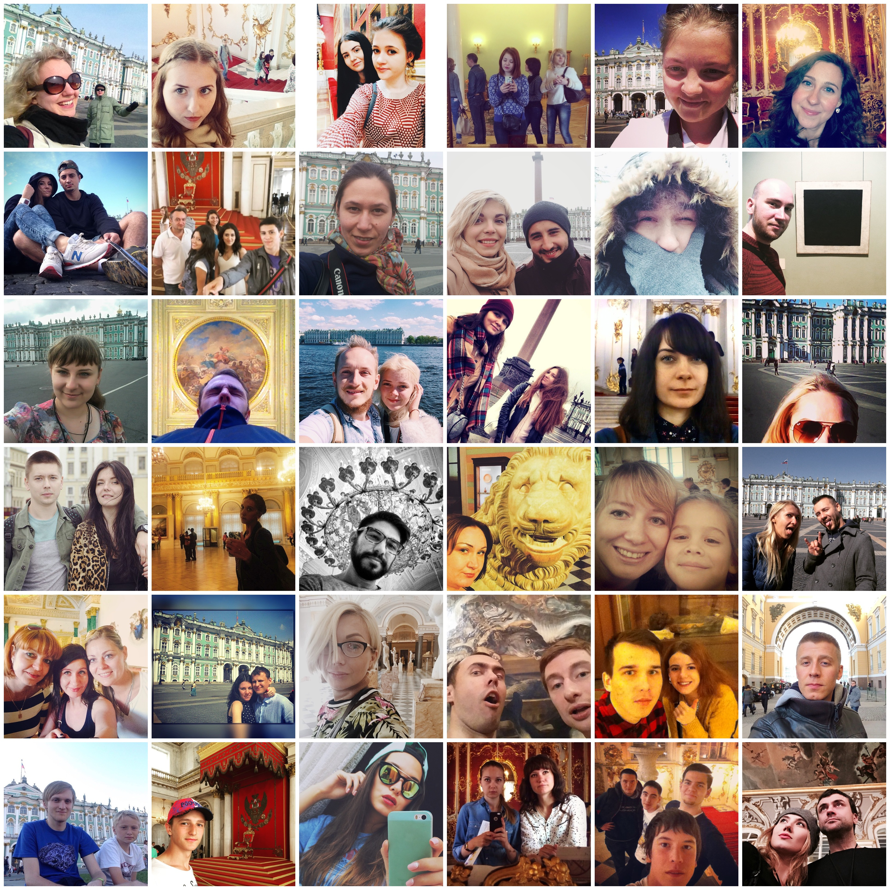
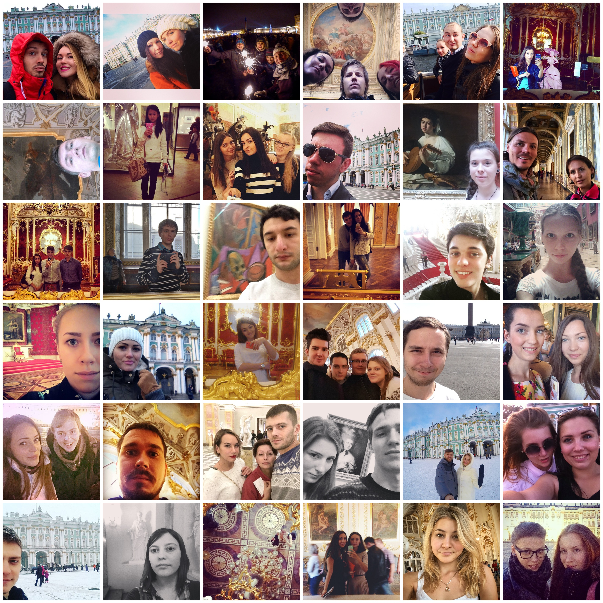
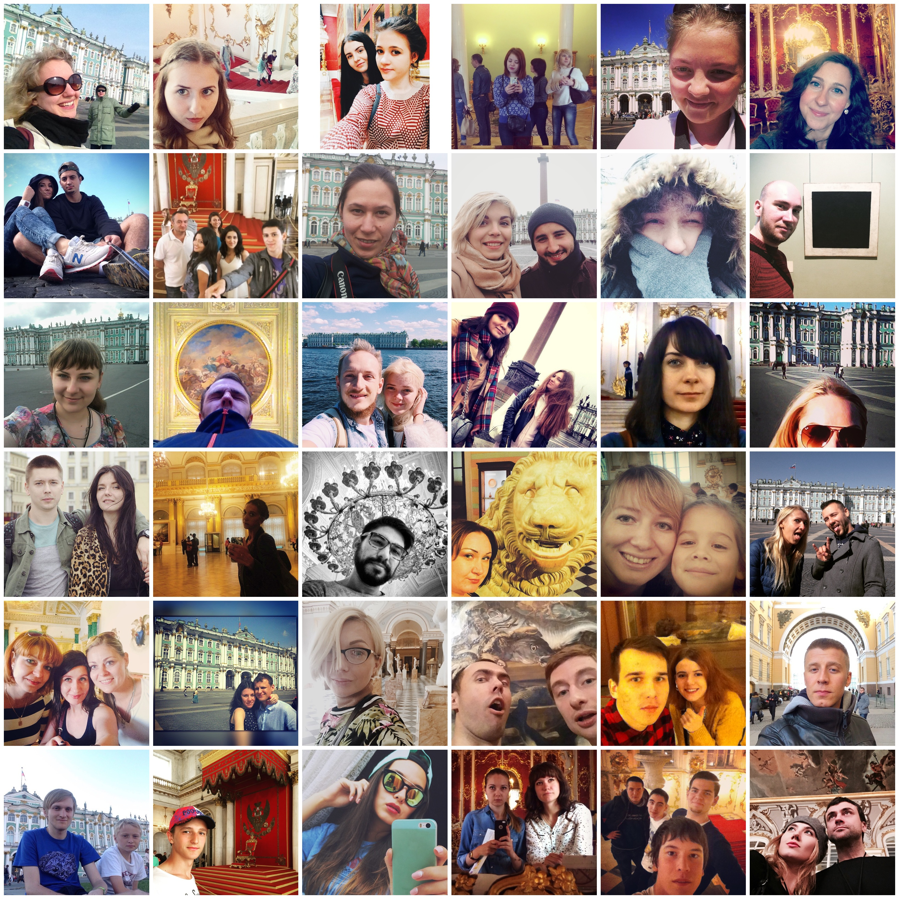
Популярны также "альтернативные селфи": фотографии рук, ног, входных билетов или карты Эрмитажа в руках у посетителя и предметов на фоне Эрмитажного убранства. Любопытно появление фотографий со стаканчиками кофе в руках, которые транслируют круг потребительских практик, в который включено посещение Эрмитажа. Наиболее популярными стали стаканчики сети кофеен, чья бело-зеленая гамма оформления обыгрывается на фоне бело-зеленого фасада Зимнего Дворца.
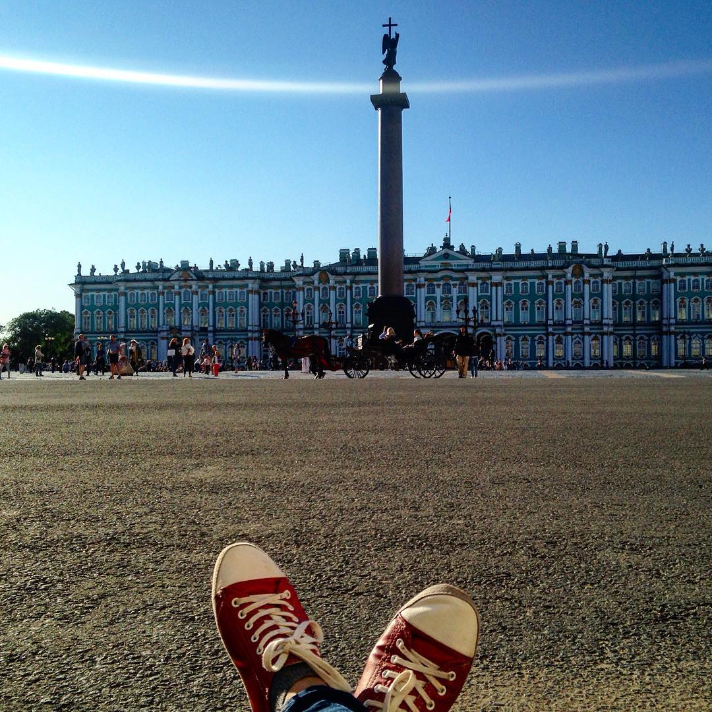
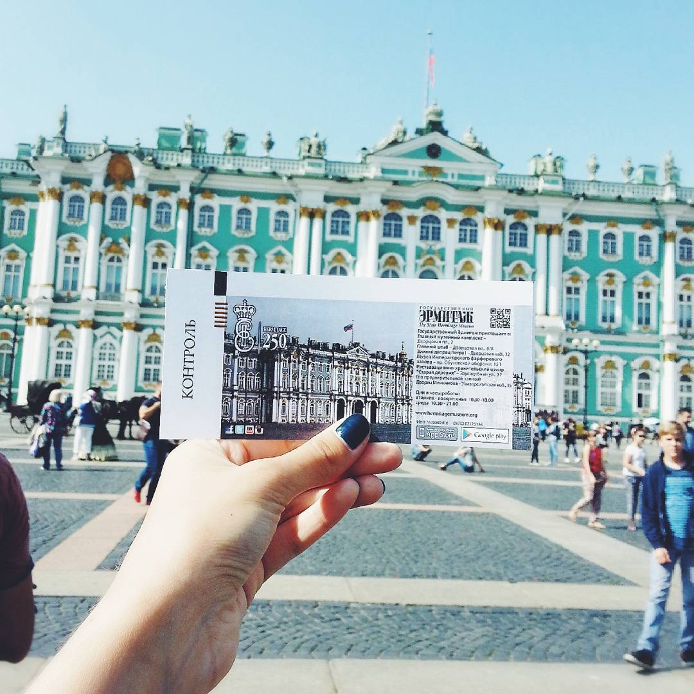
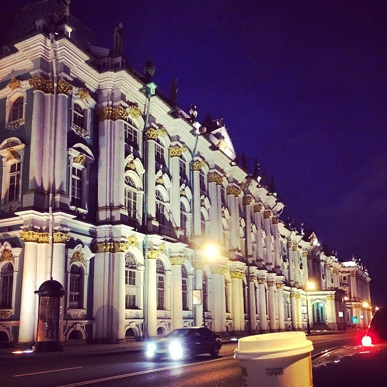
Отдельно стоит отметить фотографии детей в музее. Чаще всего в Instagram выкладывают фотографии школьных групп, которые слушают экскурсовода или делают зарисовки в альбомах, сидя на полу. Можно предположить, что таким способом пользователи Instagram символически подчеркивают связь между поколениями, ситуацию передачу знаний о культуре и роль музея в этом процессе.
Изображения людей на фотографиях в Instagram свидетельствуют о том, что поход в Эрмитаж – это коллективное мероприятие с близкими людьми или семьей. Многие снимки говорят о семейном посещении музея, особенно в случаях позирования нескольких людей – такие снимки явно делаются на память о событии. Часть фотографий говорит о посещении музея как этапе романтических отношений. В музей идут на свидание, музей выбирают как место для совместного проведения времени со своими близкими, что также связано с особенностью туристических практик и туристического взгляда.
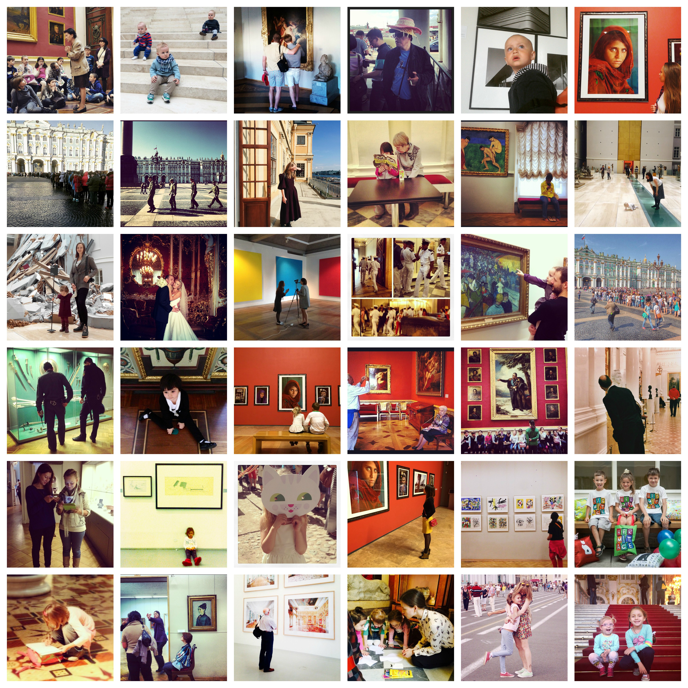